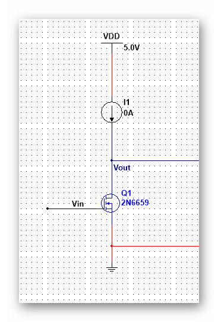
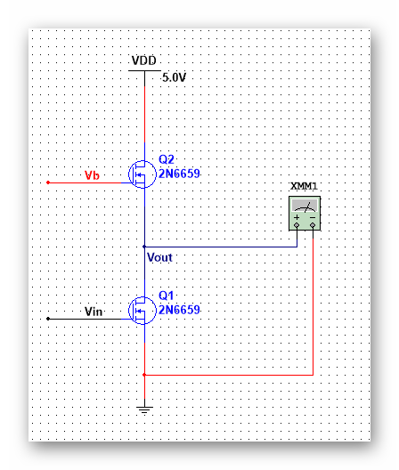

| 模拟集成电路 | |
目录： 一之MOS器件 二之单级放大器 三之差动放大器 四之电流镜偏置 五之共源电阻负载 六之共源二极管负载 七之共源电流源负载 八之共源电流反馈 九之线性区MOS负载 十之共源极负反馈负载 十一之源跟随器（共漏） 十二之共栅极 十三之共源共栅 十四之差动放大器 十五之电流镜 十六之偏置电路 十七之小技巧1 十八之小技巧2 返回页： 类似页：
|
三、电流源负载的共源极放大器先上图： 这是一个理想图。这是实际的电路图 一般的电流源使用一个栅压固定的MOS就可以实现。保证MOS管出于饱和状态。 可以看到，这时的电路图就可以进行小信号等效： 可以简单地地得到Av=-gm1*（ro1||ro2）， 这个电路的优点：M2的输出阻抗与最小的|Vds|间的联系较小，就是阻抗和电压关系不大，但是可以较好的响应电流Ids，这保证了增益不会产生过大的 过驱电压。同时，增大W和L可以提高ro2，这样可以提高增益。 缺点：MOS的存在会在输出电压处带来较大的结电容。 至于Vb的确定在后面的反馈环路中会有具体介绍。 关于前面的几点解释： W/L需要等比例增加，否只增加W，则过驱电压会增大。只增加L，则gm减小。这对于两个管子都成立。 但是这不是关键，可以考虑整体的增益表达式gm*ro1=（2（W/L）1*u*Cox*Id）*1/(λId), 可以看到增益随L的增加而增加，应为λ对L的依赖高于gm，具体的就要查看半导体器件。 同样的道理可以利用增大L来提高ro2，感觉这里推翻了前面的等比例增大的要求，这说明电路设计的准则就是需求高于一切，需求是啥，电路的标准 就在哪。
|
|---|---|